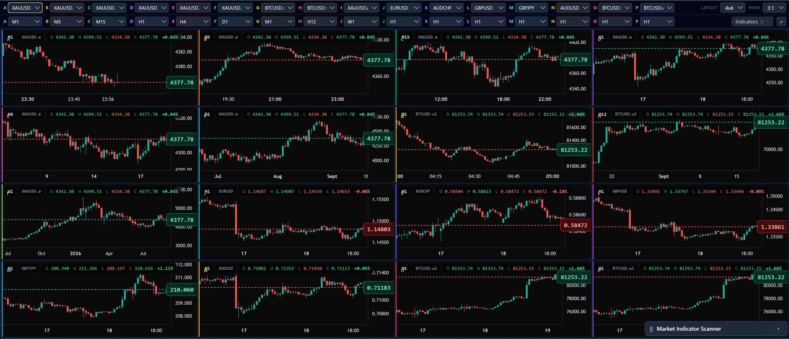
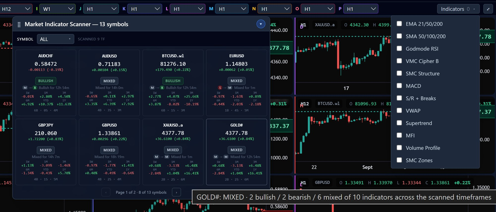
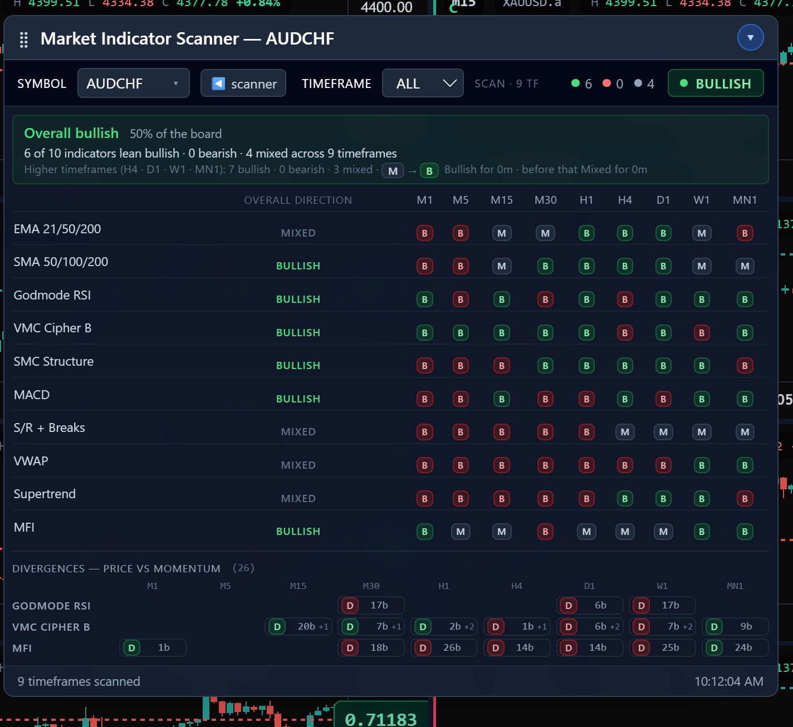
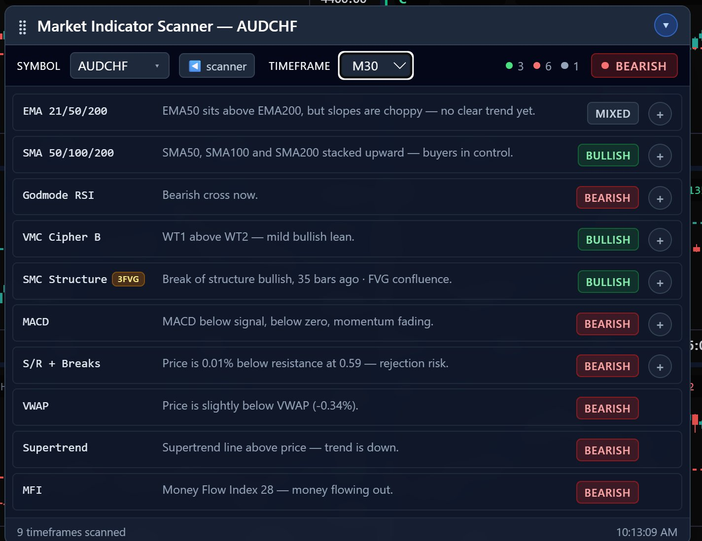
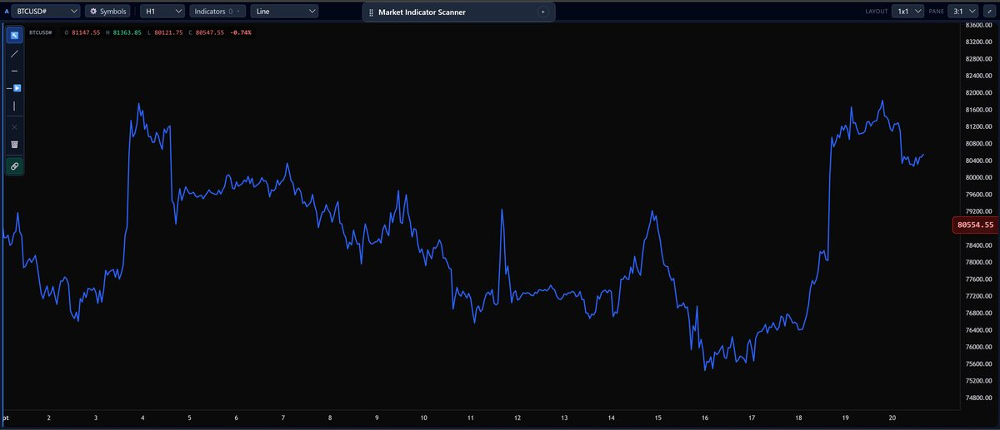
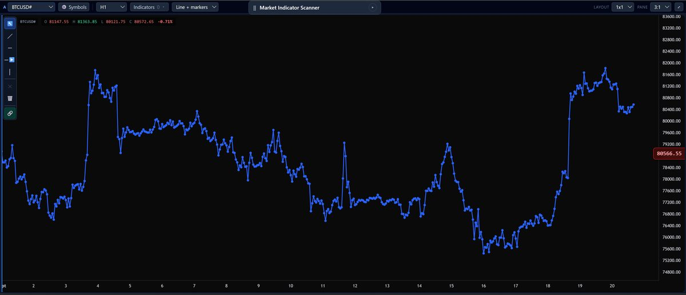
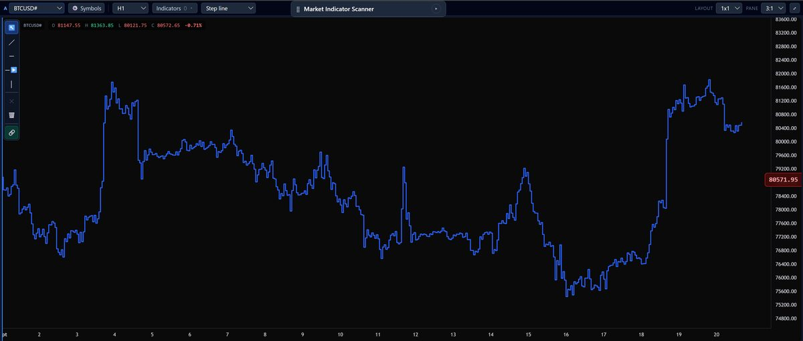
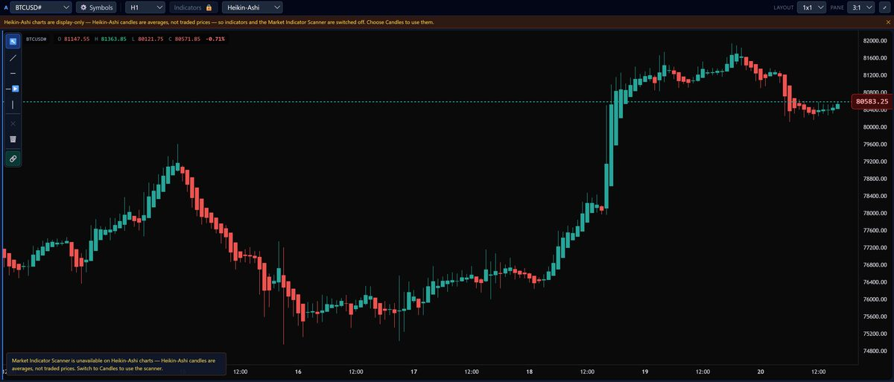
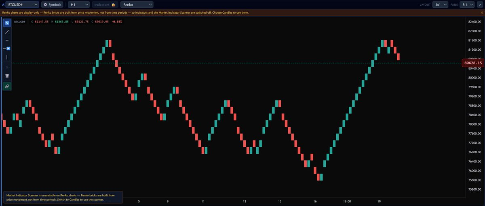
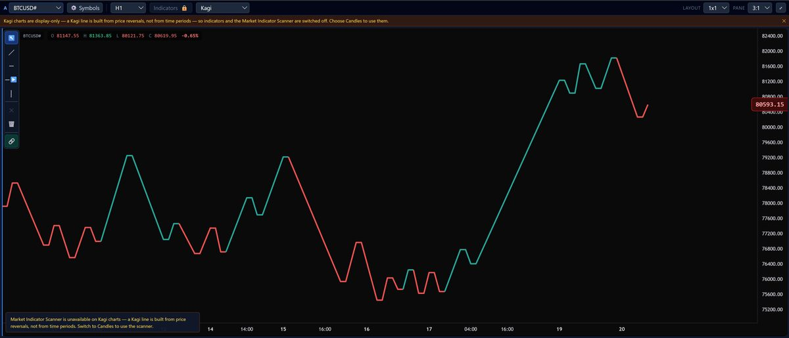

Tiling windows and adding indicators is something MT5 already does. What it doesn't do is look across your watchlist and tell you anything — you still open every chart yourself to find out what's going on. ACM scans all of it automatically, across 9 timeframes, and shows you which instruments deserve a look right now.
Windows desktop app · connects to any MT5 broker · not financial advice

You can tile charts and load indicators natively — that part's fine. What's missing is anything that looks at your whole list of instruments and tells you which ones need attention. So you still open each chart yourself, on every timeframe you care about, one at a time. By the time you've checked the last one, the first one has already changed.
Most market scanners give you a colored label and leave you to trust it. ACM shows the reasoning behind every verdict, at whatever depth you want to see.
The scanner panel runs about ten classic technical studies across nine timeframes, for every instrument on your list, and reduces it to a single verdict: bullish, bearish, or mixed.
Plus Volume Profile and SMC Zones, available on every chart — they're context tools rather than directional signals, so they sit outside the scored verdict above.

Instead of just "bullish," ACM tells you it's been bullish for two hours and fourteen minutes, and what it was before that. Divergences — early signs a move is losing steam — are tracked across every timeframe in the same grid.

Drill into any timeframe and every indicator explains itself in a sentence — a golden cross, a rejection at resistance, momentum fading below zero — with the exact numbers behind it, one tap further in.

Every panel can be set to candles, line, or one of the specialist styles below. Candles, line, line+markers and step line all use real time-based prices, so the scanner and indicators work on them normally. Heikin-Ashi, Renko and Kagi rebuild the chart from averaged prices or price movement instead of time — genuinely useful for reading trend structure, but display-only, so the scanner switches off automatically on those three.






Plus standard candlestick charts on every plan — the default view used throughout this page.
One broker calls it GOLD. Another calls it XAUUSD.a. A third has its own suffix entirely. ACM finds whichever MetaTrader 5 terminal is running and works out the right name at your broker automatically.
Same instrument, three different brokers:
The same copy of ACM works on a Dukascopy, an XM, or any other MT5 broker's demo or live account, with no configuration — because it reads the connection from whichever terminal is actually running on your machine, not a fixed install path.
Every tier connects to your broker and gives you the full chart layouts. What changes is how much of the analysis is automated.
* Instrument caps are a ceiling, not a guarantee — you can only track instruments your broker actually offers in MetaTrader 5. If your broker lists fewer instruments than your plan's cap, that's the real limit.
On candles, line, line+markers and step line — yes, fully. Heikin-Ashi, Renko and Kagi are display-only chart types: they're built from averaged prices or price movement rather than real traded prices, so indicators and the scanner switch off automatically on those, regardless of your plan. Switch back to candles to use them again.
No. ACM never places a trade and never touches your account balance. It reads market data through your MetaTrader 5 terminal and shows you what the technical studies currently say — what you do with that is entirely up to you.
No. ACM doesn't tell you what to buy or sell, and it doesn't predict the future. It summarizes what a set of established technical studies currently show, on the markets you've already chosen to follow, and flags when that picture changes.
If your broker gives you MetaTrader 5, yes. ACM detects whichever MT5 terminal is running on your machine and automatically works out how your broker names each instrument, so the same install works unmodified across brokers.
A Windows PC with MetaTrader 5 installed and logged in to your broker. Installation is a normal setup wizard — no coding, no command line.
If you upgrade to a Pro license before the trial ends, the $9.99 is credited toward the $199 price. If you don't act, the trial converts to the Pro monthly subscription — you can cancel any time before that happens.
Yes — reach out and we'll move your license across. Most traders start on a monthly plan and switch to one-time once they know they're keeping it.
Seven days, full access, $9.99 — credited toward Pro if you stay.
Start the trial